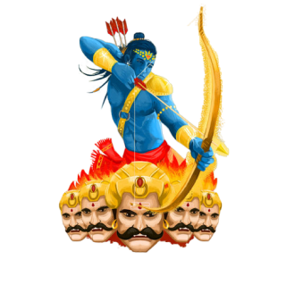
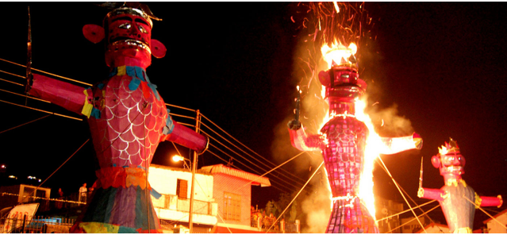
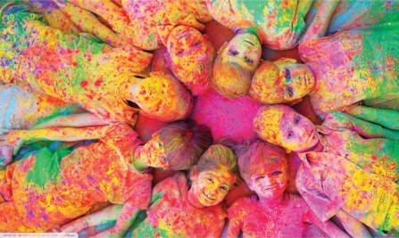
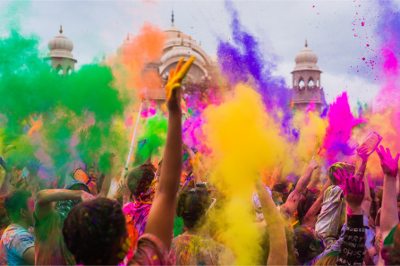
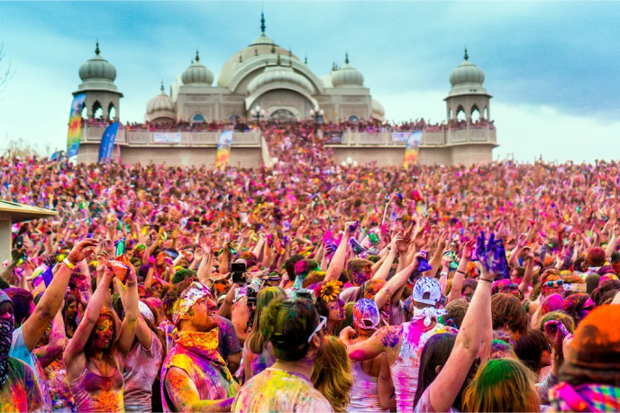

Dussehra is an important festival in India. The
‘tenth-day victory’ marks the Lord Rama's victory over Ravana (the 10-headed demon) after 10
days of battles. People throughout India celebrate the auspicious occasion of Dussehra in their
own way. Each region has its own specialty.
It is believed that it is not only the victory of Lord
Rama over Ravana but it is the victory of mankind. So the day is celebrated with great religious
fervor and believed that whenever evil power will try to rule humanity, God will appear to
rescue His devotees.

Holi is one of the famous festivals of India, celebrated
with a lot of fervour across the country.



On the day of Holi, the famous festival of Indian states, people gather in open areas and apply
dry and wet colors of multiple hues to each other, with some carrying water guns and colored
water-filled balloons.